공인중개사-1차 (2013-10-27 기출문제)
1과목: 부동산학개론
1. 토지의 특성에 관한 설명으로 틀린 것은?
- 영속성으로 인해 원칙적으로 감가상각이 적용되지 않는다.
- 부동성(위치의 고정성)으로 인해 부동산활동이 국지화된다.
- 부증성으로 인해 토지이용이 집약화된다.
- 개별성(이질성)으로 인해 부(-)의 외부효과가 발생한다.
- 이용주체의 목적에 따라 인위적으로 분할 또는 합병하여 이용할 수 있다.
(정답률: 52%)

2. 다음 중 옳은 것은 모두 몇 개인가?
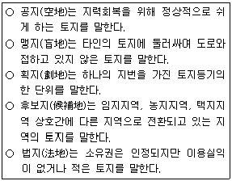
- 1개
- 2개
- 3개
- 4개
- 5개
(정답률: 61%)
3. 한국표준산업분류에 따른 부동산업에 해당하지 않는 것은?
- 주거용 건물 개발 및 공급업
- 부동산 투자 및 금융업
- 부동산 자문 및 중개업
- 비주거용 부동산 관리업
- 기타 부동산 임대업
(정답률: 57%)
4. 다음 중 저량(stock)의 경제변수는 모두 몇 개인가?
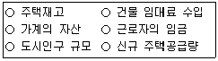
- 2개
- 3개
- 4개
- 5개
- 6개
(정답률: 54%)
5. 부동산의 공급곡선에 관한 설명으로 틀린 것은?(단, 다른 조건은 동일함)
- 한 국가 전체의 토지공급량이 불변이라면 토지공급의 가격탄력성은 ‘0’이다.
- 주택의 단기 공급곡선은 가용생산요소의 제약으로 장기 공급곡선에 비해 더 비탄력적이다.
- 부동산 수요가 증가하면, 부동산공급곡선이 비탄력적일수록 시장균형가격이 더 크게 상승한다.
- 토지는 용도의 다양성으로 인해 우하향하는 공급곡선을 가진다.
- 개발행위허가 기준의 강화와 같은 토지이용규제가 엄격해지면 토지의 공급곡선은 이전보다 더 비탄력적이 된다.
(정답률: 49%)
6. 다음과 같은 조건에서 거미집이론에 따를 경우, 수요가 증가하면 A부동산과 B부동산의 모형 형태는?[단, X축은 수량(quantity), Y축은 가격(price)을 나타내며, 다른 조건은 동일함](순서대로 A부동산, B부동산)
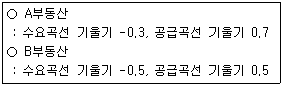
- 수렴형, 순환형
- 수렴형, 수렴형
- 발산형, 순환형
- 순환형, 수렴형
- 수렴형, 발산형
(정답률: 43%)
7. A부동산에 대한 수요의 가격탄력성과 소득탄력성이 각각 0.9와 0.5이다. A부동산 가격이 2% 상승하고 소득이 4% 증가할 경우, A부동산 수요량의 전체 변화율(%)은?(단, A부동산은 정상재이고, 가격탄력성은 절대값으로 나타내며, 다른 조건은 동일함)
- 0.2
- 1.4
- 1.8
- 2.5
- 3.8
(정답률: 40%)
8. A부동산의 가격이 5% 상승할 때, B부동산의 수요는 10% 증가하고 C부동산의 수요는 5% 감소한다. A와 B, A와 C간의 관계는?(단, 다른 조건은 동일함)(순서대로 A와 B의 관계, A와 C의 관계)
- 대체재, 보완재
- 대체재, 열등재
- 보완재, 대체재
- 열등재, 정상재
- 정상재, 열등재
(정답률: 47%)
9. 부동산시장에서 주택의 공급곡선을 우측으로 이동시키는 요인이 아닌 것은?(단, 다른 조건은 동일함)
- 주택건설업체 수의 증가
- 주택건설용 원자재 가격의 하락
- 주택담보대출 이자율의 상승
- 새로운 건설기술의 개발에 따른 원가절감
- 주택건설용 토지가격의 하락
(정답률: 59%)
10. 크리스탈러(W.Christaller)의 중심지이론에서 사용되는 개념에 대한 정의로 옳은 것을 모두 고른 것은?
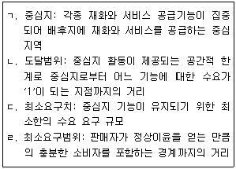
- ㄱ, ㄴ
- ㄴ, ㄷ
- ㄱ, ㄴ, ㄹ
- ㄱ, ㄷ, ㄹ
- ㄴ, ㄷ, ㄹ
(정답률: 49%)
11. 도시공간구조이론에 관한 설명으로 틀린 것은?
- 동심원이론에 따르면 저소득층일수록 고용기회가 적은 부도심과 접근성이 양호하지 않은 지역에 주거를 선정하는 경향이 있다.
- 선형이론에 의하면 고소득층의 주거지는 주요 교통노선을 축으로 하여 접근성이 양호한 지역에 입지하는 경향이 있다.
- 동심원이론에 의하면 점이지대는 고소득층 주거지역보다 도심에 가깝게 위치한다.
- 다핵심이론에서 도시는 하나의 중심지가 아니라 몇 개의 중심지들로 구성된다.
- 동심원이론은 도시의 공간구조를 도시생태학적 관점에서 접근하였다.
(정답률: 47%)
12. 지대론에 관한 설명으로 틀린 것은?
- 리카도(D.Ricardo)는 비옥도의 차이, 비옥한 토지량의 제한, 수확체감 법칙의 작동을 지대발생의 원인으로 보았다.
- 위치지대설에 따르면 다른 조건이 동일한 경우, 지대는 중심지에서 거리가 멀어질수록 하락한다.
- 절대지대설에 따르면 토지의 소유 자체가 지대의 발생요인이다.
- 입찰지대설에 따르면 토지이용은 최고의 지대지불의사가 있는 용도에 할당된다.
- 차액지대설에 따르면 지대는 경제적 잉여가 아니고 생산비이다.
(정답률: 54%)
13. A도시와 B도시 사이에 위치하고 있는 C도시는 A도시로부터 5km, B도시로부터 10km 떨어져 있다. A도시의 인구는 5만명, B도시의 인구는 10만명, C도시의 인구는 3만명이다. 레일리(W.Reilly)의 ‘소매인력법칙’을 적용할 경우, C도시에서 A도시와 B도시로 구매 활동에 유인되는 인구규모는?(단, C도시의 모든 인구는 A도시와 B도시에서만 구매함)(순서대로 A도시, B도시)
- 5,000명, 25,000명
- 10,000명, 20,000명
- 15,000명, 15,000명
- 20,000명, 10,000명
- 25,000명, 5,000명
(정답률: 47%)
14. 베버(A.Weber)의 공업입지론에 관한 설명으로 틀린 것은?(단, 기업은 단일 입지 공장이고, 다른 조건은 동일함)
- 생산자는 합리적 경제인이라고 가정한다.
- 최소비용으로 제품을 생산할 수 있는 곳을 기업의 최적 입지점으로 본다.
- 기업의 입지요인으로 수송비, 인건비, 집적이익을 제시하였다.
- 기업은 수송비, 인건비, 집적이익의 순으로 각 요인이 최소가 되는 지점에 입지한다.
- 등비용선(isodapane)은 최소수송비 지점으로부터 기업이 입지를 바꿀 경우, 이에 따른 추가적인 수송비의 부담액이 동일한 지점을 연결한 곡선을 의미한다.
(정답률: 42%)
15. 우리나라 부동산정책에 관한 설명으로 틀린 것은?
- 토지이용에 있어서 용도지역ㆍ지구는 사회적 후생손실을 완화하기 위해 지정된다.
- 주택시장에서 단기적으로 수요에 비해 공급이 부족하여 시장실패가 발생할 경우, 이는 정부의 주택시장에 대한 개입의 근거가 된다.
- 토지거래계약에 관한 허가구역은 토지의 투기적인 거래가 성행하거나 지가가 급격히 상승하는 지역을 대상으로 지정될 수 있다.
- 분양가상한제는 실수요자의 내집마련 부담을 완화하기 위해 도입되었다.
- 주택보급률이 100%를 넘게 되면 시장효율성과 형평성이 달성되므로 정부가 주택시장에 개입하지 않는다.
(정답률: 54%)
16. 다음 설명 중 틀린 것은?
- 개발권양도제도(TDR)란 개발제한으로 인해 규제되는 보전지역에서 발생하는 토지소유자의 손실을 보전하기 위한 제도이다.
- 다른 조건이 일정할 때 정부가 임대료 한도를 시장균형임대료보다 높게 설정하면 초과수요가 발생하여 임대부동산의 부족현상이 초래된다.
- 헨리 조지(H.George)는 토지세를 제외한 다른 모든 조세를 없애고 정부의 재정은 토지세만으로 충당하는 토지단일세를 주장하였다.
- 공공토지비축제도는 정부가 토지를 매입한 후 보유하고 있다가 적절한 때에 이를 매각하거나 공공용으로 사용하는 제도를 말한다.
- 부동산개발에서 토지수용방식의 문제점 중 하나는 토지매입과 보상과정에서 발생하는 사업시행자와 피수용자 사이의 갈등이다.
(정답률: 55%)
17. 마샬(A.Marshall)의 준지대론에 관한 설명으로 틀린 것은?
- 한계생산이론에 입각하여 리카도(D.Ricardo)의 지대론을 재편성한 이론이다.
- 준지대는 생산을 위하여 사람이 만든 기계나 기구들로부터 얻는 소득이다.
- 토지에 대한 개량공사로 인해 추가적으로 발생하는 일시적인 소득은 준지대에 속한다.
- 고정생산요소의 공급량은 단기적으로 변동하지 않으므로 다른 조건이 동일하다면 준지대는 고정생산요소에 대한 수요에 의해 결정된다.
- 준지대는 토지 이외의 고정생산요소에 귀속되는 소득으로서, 다른 조건이 동일하다면 영구적으로 지대의 성격을 가지는 소득이다.
(정답률: 45%)
18. 다음 중 우리나라 정부의 부동산시장에 대한 직접개입수단은 모두 몇 개인가?
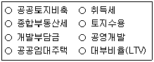
- 3개
- 4개
- 5개
- 6개
- 7개
(정답률: 51%)
19. 외부효과에 관한 설명으로 틀린 것은?(단, 다른 조건은 동일함)
- 한 사람의 행위가 제3자의 경제적 후생에 영향을 미치지만, 그에 대한 보상이 이루어지지 않는 현상을 말한다.
- 매연을 배출하는 석탄공장에 대한 규제가 전혀 없다면, 그 주변 주민들에게 부(-)의 외부효과가 발생하게 된다.
- 부(-)의 외부효과가 발생하게 되면 법적 비용, 진상조사의 어려움 등으로 인해 당사자간 해결이 곤란한 경우가 많다.
- 부(-)의 외부효과를 발생시키는 공장에 대해서 부담금을 부과하면, 생산비가 증가하여 이 공장에서 생산되는 제품의 공급이 감소하게 된다.
- 새로 조성된 공원이 쾌적성이라는 정(+)의 외부효과를 발생시키면, 공원 주변 주택에 대한 수요곡선이 좌측으로 이동하게 된다.
(정답률: 53%)
20. 저당담보부증권(MBS)에 관련된 설명으로 틀린 것은?
- MPTS(mortgage pass-through securities)는 지분형 증권이기 때문에 증권의 수익은 기초자산인 주택저당채권 집합물(mortgage pool)의 현금흐름(저당지불액)에 의존한다.
- MBB(mortgage backed bond)의 투자자는 최초의 주택저당채권 집합물에 대한 소유권을 갖는다.
- CMO(collateralized mortgage obligation)의 발행자는 주택저당채권 집합물을 가지고 일정한 가공을 통해 위험-수익 구조가 다양한 트랜치의 증권을 발행한다.
- MPTB(mortgage pay-through bond)는 MPTS와 MBB를 혼합한 특성을 지닌다.
- CMBS(commercial mortgage backed securities)란 금융기관이 보유한 상업용 부동산 모기지(mortgage)를 기초자산으로 하여 발행하는 증권이다.
(정답률: 50%)
21. 다음 ( )에 들어갈 내용으로 옳게 나열된 것은?(순서대로 A, B, C)
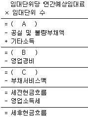
- 유효총소득, 순영업소득, 가능총소득
- 가능총소득, 순영업소득, 유효총소득
- 순영업소득, 가능총소득, 유효총소득
- 유효총소득, 가능총소득, 순영업소득
- 가능총소득, 유효총소득, 순영업소득
(정답률: 50%)
22. 부동산 투자타당성 평가에 관한 설명으로 틀린 것은?
- 회계적 이익률(accounting rate of return)은 연평균순이익을 연평균투자액으로 나눈 비율이다.
- 내부수익률(IRR)이란 투자로부터 기대되는 현금유입의 현재가치와 현금유출의 현재가치를 같게 하는 할인율이다.
- 순현가(NPV)는 화폐의 시간적 가치를 고려한다.
- 이론적으로 순현가(NPV)가 ‘0’보다 작으면 투자타당성이 없다고 할 수 있다.
- 수익성지수(PI)는 화폐의 시간적 가치를 고려하지 않는다.
(정답률: 48%)
23. 다음과 같은 현금흐름을 갖는 투자안 A의 순현가(NPV)와 내부수익률(IRR)은?[단, 할인율은 연 20%, 사업기간은 1년이며, 사업 초기(1월 1일)에 현금지출만 발생하고 사업 말기(12월 31일)에 현금유입만 발생함](순서대로 NPV, IRR)
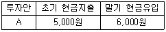
- 0원, 20%
- 0원, 25%
- 0원, 30%
- 1,000원, 20%
- 1,000원, 25%
(정답률: 37%)
24. 승수법과 수익률법에 관한 설명으로 옳은 것은?
- 총소득승수(GIM)는 총투자액을 세후현금흐름(ATCF)으로 나눈 값이다.
- 세전현금흐름승수(BTM)는 지분투자액을 세전현금흐름(BTCF)으로 나눈 값이다.
- 순소득승수(NIM)는 지분투자액을 순영업소득(NOI)으로 나눈 값이다.
- 세후현금흐름승수(ATM)는 총투자액을 세후현금흐름으로 나눈 값이다.
- 지분투자수익률(ROE)은 순영업소득을 지분투자액으로 나눈 비율이다.
(정답률: 35%)
25. 다음과 같은 조건에서 부동산 포트폴리오의 기대수익률(%)은?(단, 포트폴리오의 비중은 A부동산: 50%, B부동산: 50%임)
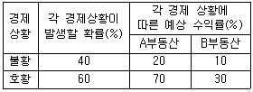
- 24
- 28
- 32
- 36
- 40
(정답률: 46%)
26. 부동산투자회사법상의 규정에 관한 설명으로 틀린 것은?(오류 신고가 접수된 문제입니다. 반드시 정답과 해설을 확인하시기 바랍니다.)
- 자기관리 부동산투자회사의 설립 자본금은 10억원 이상으로 한다.
- 자기관리 부동산투자회사는 그 설립등기일부터 10일 이내에 대통령령으로 정하는 바에 따라 설립보고서를 작성하여 국토교통부장관에게 제출하여야 한다.
- 위탁관리 부동산투자회사는 본점 외의 지점을 설치할 수 있으며, 직원을 고용하거나 상근 임원을 둘 수 있다.
- 감정평가사 또는 공인중개사로서 해당 분야에 5년 이상 종사한 사람은 자기관리 부동산투자회사의 상근 자산운용 전문인력이 될 수 있다.
- 위탁관리 부동산투자회사 및 기업구조조정 부동산투자회사의 설립 자본금은 5억원 이상으로 한다.
(정답률: 43%)
27. 투자자 甲은 부동산 구입자금을 마련하기 위하여 3년 동안 매년 연말 3,000만원씩을 불입하는 정기적금에 가입하였다. 이 적금의 이자율이 복리로 연 10%라면, 3년 후 이 적금의 미래가치는?
- 9,600만원
- 9,650만원
- 9,690만원
- 9,930만원
- 9,950만원
(정답률: 40%)
28. 부동산개발사업의 재원조달방안 중 하나인 메자닌 금융(mezzanine financing)의 유형으로 옳은 것은?
- 신주인수권부사채
- 자산유동화증권
- 부동산 신디케이트(syndicate)
- 조인트 벤처(joint venture)
- 주택상환사채
(정답률: 38%)
29. 재무비율분석법에 관한 설명으로 틀린 것은?
- 대부비율(LTV)이 높아질수록 투자의 재무레버리지 효과가 커질 수 있다.
- 유동비율(current ratio)은 유동자산을 유동부채로 나눈 비율이다.
- 부채감당률(DCR)이 1보다 작으면 차입자의 원리금 지불능력이 충분하다.
- 총투자수익률(ROI)은 순영업소득(NOI)을 총투자액으로 나눈 비율이다.
- 부채비율은 부채총계를 자본총계로 나눈 비율이다.
(정답률: 48%)
30. 다음 ( )에 들어갈 것으로 옳은 것은?(순서대로 A, B)
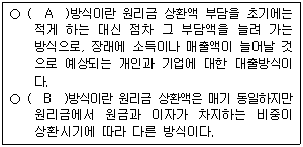
- 체증(점증)분할상환, 원금균등분할상환
- 체증(점증)분할상환, 만기일시상환
- 체증(점증)분할상환, 원리금균등분할상환
- 원리금균등분할상환, 체증(점증)분할상환
- 만기일시상환, 체증(점증)분할상환
(정답률: 52%)
31. 다음의 업무를 모두 수행하는 부동산관리의 유형은?
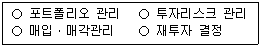
- 자산관리(asset management)
- 재산관리(property management)
- 시설관리(facility management)
- 임대차관리(leasing and tenant management)
- 건설사업관리(construction management)
(정답률: 55%)
32. 부동산 마케팅전략에 관한 설명으로 틀린 것은?
- 4P에 의한 마케팅 믹스 전략의 구성요소는 제품(product), 유통경로(place), 판매촉진(promotion), 가격(price)이다.
- 다른 아파트와 차별화되도록 ‘혁신적인 내부구조로 설계된 아파트’는 제품(product) 전략의 예가 될 수 있다.
- 표적시장(target market)은 세분화된 시장 중 가장 좋은 시장기회를 제공해 줄 수 있는 특화된 시장이다.
- 유통경로(place) 전략은 고객행동변수 및 고객특성변수에 따라 시장을 나누어서 몇 개의 세분시장으로 구분하는 것이다.
- 포지셔닝(positioning)은 목표시장에서 고객의 욕구를 파악하여 경쟁 제품과 차별성을 가지도록 제품 개념을 정하고 소비자의 지각 속에 적절히 위치시키는 것이다.
(정답률: 47%)
33. 민간의 부동산개발 사업방식에 관한 설명으로 틀린 것은?
- 자체개발사업은 불확실하거나 위험도가 큰 부동산 개발사업에 대한 위험을 토지소유자와 개발업자 간에 분산할 수 있는 장점이 있다.
- 컨소시엄 구성방식은 출자회사간 상호 이해조정이 필요하다.
- 사업위탁방식은 토지소유자가 개발업자에게 사업시행을 의뢰하고, 개발업자는 사업시행에 대한 수수료를 취하는 방식이다.
- 지주공동사업은 토지소유자와 개발업자가 부동산개발을 공동으로 시행하는 방식으로서, 일반적으로 토지소유자는 토지를 제공하고 개발업자는 개발의 노하우를 제공하여 서로의 이익을 추구한다.
- 토지신탁형은 토지소유자로부터 형식적인 소유권을 이전받은 신탁회사가 토지를 개발ㆍ관리ㆍ처분하여 그 수익을 수익자에게 돌려주는 방식이다.
(정답률: 40%)
34. 부동산개발에 관한 설명으로 옳은 것은?
- 공공개발: 제2섹터 개발이라고도 하며, 민간이 자본과 기술을 제공하고 공공기관이 인ㆍ허가 등 행정적인 부분을 담당하는 상호 보완적인 개발을 말한다.
- BTL(build-transfer-lease): 사업시행자가 시설을 준공 하여 소유권을 보유하면서 시설의 수익을 가진 후 일정 기간 경과 후 시설소유권을 국가 또는 지방자치단체에 귀속시키는 방식이다.
- BTO(build-transfer-operate): 사업시행자가 시설의 준공과 함께 소유권을 국가 또는 지방자치단체로 이전하고, 해당 시설을 국가나 지방자치단체에 임대하여 수익을 내는 방식이다.
- BOT(build-operate-transfer): 시설의 준공과 함께 시설의 소유권이 국가 또는 지방자치단체에 귀속되지만, 사업시행자가 정해진 기간 동안 시설에 대한 운영권을 가지고 수익을 내는 방식이다.
- BOO(build-own-operate): 시설의 준공과 함께 사업시행자가 소유권과 운영권을 갖는 방식이다.
(정답률: 45%)
35. 부동산의 가치발생요인에 관한 설명으로 틀린 것은?
- 대상부동산의 물리적 특성 뿐 아니라 토지이용규제 등과 같은 공법상의 제한 및 소유권의 법적 특성도 대상부동산의 효용에 영향을 미친다.
- 유효수요란 대상부동산을 구매하고자 하는 욕구로, 지불능력(구매력)을 필요로 하는 것은 아니다.
- 상대적 희소성이란 부동산에 대한 수요에 비해 공급이 부족하다는 것이다.
- 효용은 부동산의 용도에 따라 주거지는 쾌적성, 상업지는 수익성, 공업지는 생산성으로 표현할 수 있다.
- 부동산의 가치는 가치발생요인들의 상호결합에 의해 발생한다.
(정답률: 54%)
36. 감정평가에 관한 규칙상의 용어의 정의로 옳은 것은?
- ‘기준시점’이란 대상물건의 감정평가액을 결정하기 위해 현장조사를 완료한 날짜를 말한다.
- ‘유사지역’이란 대상부동산이 속한 지역으로서 부동산의 이용이 동질적이고 가치형성요인 중 지역요인을 공유하는 지역을 말한다.
- ‘적산법’이란 대상물건의 재조달원가에 감가수정을 하여 대상물건의 가액을 산정하는 감정평가방법을 말한다.
- ‘수익분석법’이란 대상물건이 장래 산출할 것으로 기대되는 순수익이나 미래의 현금흐름을 환원하거나 할인하여 대상물건의 가액을 산정하는 감정평가방법을 말한다.
- ‘가치형성요인’이란 대상물건의 경제적 가치에 영향을 미치는 일반요인, 지역요인 및 개별요인 등을 말한다.
(정답률: 34%)
37. 부동산 가격공시 및 감정평가에 관한 법률상의 규정에 관한 설명으로 틀린 것은?
- 표준지공시지가는 국가ㆍ지방자치단체 등의 기관이 그 업무와 관련하여 지가를 산정하거나 감정평가업자가 개별적으로 토지를 감정평가하는 경우에 그 기준이 된다.
- 표준주택가격의 공시사항에는 표준주택의 용도, 연면적, 구조 및 사용승인일, 표준주택의 대지면적 및 형상이 포함된다.
- 표준주택가격은 국가ㆍ지방자치단체 등의 기관이 그 업무와 관련하여 개별주택가격을 산정하는 경우에 그 기준이 된다.
- 개별공시지가에 대하여 이의가 있는 자는 개별공시지가의 결정ㆍ공시일부터 60일 이내에 서면으로 국토교통부장관에게 이의를 신청할 수 있다.
- 국토교통부장관이 공동주택의 적정가격을 조사ㆍ산정하는 경우에는 인근유사공동주택의 거래가격ㆍ임대료 및 당해 공동주택과 유사한 이용가치를 지닌다고 인정되는 공동주택의 건설에 필요한 비용추정액 등을 종합적으로 참작하여야 한다.
(정답률: 45%)
38. A군 B면 C리 자연녹지지역 내의 공업용 부동산을 비교방식으로 감정평가할 때 적용할 사항으로 옳은 것을 모두 고른 것은?
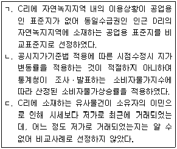
- ㄱ
- ㄱ, ㄴ
- ㄱ, ㄷ
- ㄴ, ㄷ
- ㄱ, ㄴ, ㄷ
(정답률: 42%)
39. 다음과 같은 조건에서 수익환원법에 의해 평가한 대상부동산의 가치는?
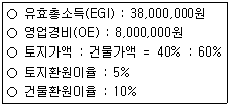
- 325,000,000원
- 375,000,000원
- 425,000,000원
- 475,000,000원
- 500,000,000원
(정답률: 36%)
40. 다음과 같은 조건에서 대상부동산의 수익가치 산정시 적용할 환원이율(capitalization rate, %)은?
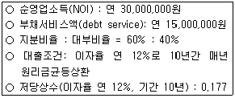
- 3.54
- 5.31
- 14.16
- 20.40
- 21.24
(정답률: 39%)
2과목: 민법 및 민사특별법
41. 의사표시에 관한 설명으로 틀린 것은?(다툼이 있으면 판례에 의함)
- 진의 아닌 의사표시는 원칙적으로 무효이다.
- 의사표시자가 그 통지를 발송한 후 사망하거나 제한능력자가 되어도 의사표시의 효력에 영향을 미치지 않는다.
- 상대방 있는 의사표시는 특별한 사정이 없으면 상대방에게 도달한 때에 그 효력이 생긴다.
- 의사표시자가 과실 없이 상대방을 알지 못하는 경우, 의사표시는「민사소송법」의 공시송달 규정에 의하여 송달할 수 있다.
- 보통우편의 방법으로 발송되었다는 사실만으로는 상당한 기간 내에 도달하였다고 추정할 수 없다.
(정답률: 42%)
42. 법률행위의 효력이 발생하기 위한 요건이 아닌 것은?(다툼이 있으면 판례에 의함)
- 대리행위에서 대리권의 존재
- 정지조건부 법률행위에서 조건의 성취
- 농지거래계약에서 농지취득자격증명
- 법률행위 내용의 적법성
- 토지거래허가구역 내의 토지거래계약에 관한 관할관청의 허가
(정답률: 54%)
43. 불공정한 법률행위에 관한 설명으로 틀린 것은?(다툼이 있으면 판례에 의함)
- 무경험이란 거래 일반의 경험부족을 말하는 것이 아니라 해당 특정영역에서의 경험부족을 말한다.
- 불공정한 법률행위가 되기 위해서는 피해자에게 궁박, 경솔과 무경험 가운데 어느 하나가 필요하다.
- 법률행위가 현저하게 공정을 잃었다고 하여 곧 그것이 궁박, 경솔 또는 무경험으로 이루어진 것으로 추정되지 않는다.
- 불공정한 법률행위로 불이익을 입는 당사자가 불공정성을 소송 등으로 주장할 수 없도록 하는 부제소합의는 특별한 사정이 없으면 무효이다.
- 불공정한 법률행위는 약자적 지위에 있는 자의 궁박, 경솔 또는 무경험을 이용한 폭리행위를 규제하려는 데에 그 목적이 있다.
(정답률: 50%)
44. 甲은 乙에게 X토지를 ㎡당 98만원에 매도하려고 했는데, 잘못하여 청약서에 ㎡당 89만원으로 기재하였고, 이에 대해 乙이 승낙하였다. 그 후 X토지의 시가가 ㎡당 158만원으로 폭등하자 甲이 丙에게 X토지를 ㎡당 158만원에 매도하고 소유권을 이전해 주었다. 다음 설명 중 틀린 것은?(다툼이 있으면 판례에 의함)
- 乙은 甲과 丙사이의 매매계약을 사기를 이유로 취소할 수 없다.
- 甲과 乙사이의 매매계약은 특별한 사정이 없는 한 ㎡당 89만원에 성립한다.
- 乙은 丙명의로 이루어진 소유권이전등기의 말소를 청구할 수 없다.
- 만일 甲과 乙이 ㎡당 98만원으로 합의하였으나 ㎡당 89만원으로 기재되었다면 甲은 착오를 이유로 매매계약을 취소할 수 없다.
- 만일 甲의 배임행위에 적극 가담한 丙으로부터 선의의 丁이 X토지를 취득하였다면 丁은 甲과 丙사이의 매매계약의 유효를 주장할 수 있다.
(정답률: 41%)
45. 법률행위의 종류에 관한 연결이 틀린 것은?
- 채권행위 - 교환
- 상대방 없는 단독행위 - 계약해제
- 처분행위 - 지상권설정행위
- 유상행위 - 임대차
- 무상행위 - 증여
(정답률: 48%)
46. 대리인에 관한 설명으로 틀린 것은?(다툼이 있으면 판례에 의함)
- 복대리인은 그 권한 내에서 대리인의 이름으로 법률행위를 한다.
- 수권행위로 권한을 정하지 않은 경우, 대리인은 대리의 목적인 물건이나 권리의 성질이 변하지 않는 범위에서 그 이용행위를 할 수 있다.
- 대리인은 그 권한 내에서 사자를 사용할 수 있으며, 이때에는 복대리에 관한 규정이 적용되지 않는다.
- 대리인에 대하여 성년후견이 개시되면 대리권은 소멸한다.
- 대리인이 수인인 때에 법률이나 수권행위로 다른 정함이 없으면 각자 본인을 대리한다.
(정답률: 44%)
47. 법률효과가 확정적이지 않은 것을 모두 고른 것은? (다툼이 있으면 판례에 의함)
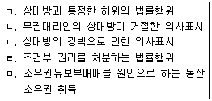
- ㄱ, ㄷ
- ㄱ, ㄹ
- ㄴ, ㄹ
- ㄴ, ㅁ
- ㄷ, ㅁ
(정답률: 24%)
48. 甲의 대리인 乙은 甲 소유의 부동산을 丙에게 매도하기로 약정하였다. 다음 설명 중 틀린 것은?(다툼이 있으면 판례에 의함)
- 乙은 특별한 사정이 없으면 丙으로부터 계약금을 수령할 권한이 있다.
- 乙이 丙의 기망행위로 매매계약을 체결한 경우, 甲은 이를 취소할 수 있다.
- 乙이 매매계약서에 甲의 이름을 기재하고 甲의 인장을 날인한 때에도 유효한 대리행위가 될 수 있다.
- 乙이 매매계약을 체결하면서 甲을 위한 것임을 표시하지 않은 경우, 특별한 사정이 없으면 그 의사표시는 자기를 위한 것으로 본다.
- 만일 乙이 미성년자인 경우, 甲은 乙이 제한능력자임을 이유로 매매계약을 취소할 수 있다.
(정답률: 44%)
49. 반사회적 법률행위로서 무효가 아닌 것은?(다툼이 있으면 판례에 의함)
- 어떤 일이 있어도 이혼하지 않기로 하는 약정
- 불륜관계의 종료를 해제조건으로 하여 내연녀에게 한 증여
- 수증자가 부동산 매도인의 배임행위에 적극 가담하여 체결한 증여계약
- 관계 당사자 전원의 합의로 이루어진 중간생략등기
- 공무원의 직무에 관하여 특별한 청탁을 하고 그 보수로 고액의 금전을 지급할 것을 내용으로 한 약정
(정답률: 47%)
50. 법률행위의 무효에 관한 설명으로 틀린 것은?(다툼이 있으면 판례에 의함)
- 무효인 법률행위를 추인하면 특별한 사정이 없는 한 처음부터 새로운 법률행위를 한 것으로 본다.
- 추인 요건을 갖추면 취소로 무효가 된 법률행위의 추인도 허용된다.
- 사회질서의 위반으로 무효인 법률행위는 추인의 대상이 되지 않는다.
- 무효인 법률행위에 따른 법률효과를 침해하는 것처럼 보이는 위법행위가 있더라도 그 손해배상을 청구할 수 없다.
- 폭리행위로 무효가 된 법률행위는 다른 법률행위로 전환될 수 있다.
(정답률: 34%)
51. 부동산 물권을 등기 없이 취득할 수 있는 경우가 아닌 것은?(다툼이 있으면 판례에 의함)
- 신축건물의 소유권 취득
- 분묘기지권의 취득
- 상속에 의한 소유권 취득
- 법정저당권의 취득
- 점유취득시효에 의한 지역권의 취득
(정답률: 39%)
52. 민법상 점유에 관한 설명으로 틀린 것은?(다툼이 있으면 판례에 의함)
- 점유자는 평온ㆍ공연하게 점유한 것으로 추정한다.
- 매매계약을 원인으로 토지의 소유자로 등기한 자는 통상 이전등기할 때에 그 토지를 인도받아 점유한 것으로 보아야 한다.
- 점유자가 점유물에 대하여 행사하는 권리는 적법하게 보유한 것으로 추정한다.
- 악의의 점유자는 그의 잘못 없이 과실을 훼손 또는 수취하지 못한 때에도 그 과실의 대가를 보상하여야 한다.
- 점유자의 특정승계인은 자기의 점유와 전(前)점유자의 점유를 아울러 주장할 수 있다.
(정답률: 43%)
53. 주위토지통행권에 관한 설명으로 옳은 것은?(다툼이 있으면 판례에 의함)
- 주위토지통행권자는 담장과 같은 축조물이 통행에 방해가 되더라도 그 철거를 청구할 수 없다.
- 토지분할로 무상주위토지통행권을 취득한 분할토지의 소유자가 그 토지를 양도한 경우, 양수인에게는 무상주위토지통행권이 인정되지 않는다.
- 소유 토지의 용도에 필요한 통로가 이미 있더라도 그 통로를 사용하는 것보다 더 편리하다면 다른 장소로 통행할 권리가 인정된다.
- 기존의 통로가 있으면, 그것이 당해 토지의 이용에 부적합하여 실제로 통로로서의 충분한 기능을 하지 못할 때에도 주위토지통행권은 인정되지 않는다.
- 주위토지통행권은 일단 발생하면 나중에 그 토지에 접하는 공로가 개설되어 그 통행권을 인정할 필요가 없어지더라도 소멸하지 않는다.
(정답률: 42%)
54. 부동산의 점유취득시효에 관한 설명으로 틀린 것은?(다툼이 있으면 판례에 의함)
- 시효취득자는 취득시효의 완성으로 바로 소유권을 취득할 수 없고, 이를 원인으로 소유권이전등기청구권이 발생할 뿐이다.
- 시효취득자의 점유가 계속되는 동안 이미 발생한 소유권이전등기청구권은 시효로 소멸하지 않는다.
- 시효취득으로 인한 소유권이전등기청구권이 발생하면 부동산소유자와 시효취득자 사이에 계약상의 채권관계가 성립한 것으로 본다.
- 등기부상 소유명의자가 진정한 소유자가 아니면 원칙적으로 그를 상대로 취득시효의 완성을 원인으로 소유권이전등기를 청구할 수 없다.
- 취득시효 완성 후 시효취득자가 소유권이전등기절차 이행의 소를 제기하였으나 그 후 상대방의 소유를 인정하여 합의로 소를 취하한 경우, 특별한 사정이 없으면 이는 시효이익의 포기이다.
(정답률: 38%)
55. 甲과 乙은 X토지를 각 1/2의 지분을 가지고 공유하고 있다. 다음 설명 중 틀린 것은?(다툼이 있으면 판례에 의함)
- 甲의 지분에 관하여 제3자 명의로 원인무효의 등기가 이루어진 경우, 乙은 공유물의 보존행위로 그 등기의 말소를 청구할 수 있다.
- 甲이 乙의 동의 없이 X토지 전부를 단독으로 사용하고 있다면, 乙은 공유물의 보존행위로 X토지 전부를 자기에게 반환할 것을 청구할 수 있다.
- 甲과 乙이 X토지의 각 특정 부분을 구분하여 소유하면서 공유등기를 한 경우, 甲 자신이 구분소유하는 지상에 건물을 신축하더라도 乙은 그 건물의 철거를 청구할 수 없다.
- 甲이 乙의 동의 없이 X토지의 1/2을 배타적으로 사용하는 경우, 乙은 그의 지분 비율로 甲에게 부당이득의 반환을 청구할 수 있다.
- 제3자가 권원 없이 자기명의로 X토지의 소유권이전등기를 한 경우, 甲은 공유물의 보존행위로 원인무효의 등기 전부의 말소를 청구할 수 있다.
(정답률: 24%)
56. 물권의 소멸에 관한 설명으로 틀린 것은?(다툼이 있으면 판례에 의함)
- 소유권과 저당권은 소멸시효에 걸리지 않는다.
- 물권의 포기는 물권의 소멸을 목적으로 하는 단독행위이다.
- 전세권이 저당권의 목적인 경우, 저당권자의 동의 없이 전세권을 포기할 수 없다.
- 존속기간이 있는 지상권은 특별한 사정이 없으면 그 기간의 만료로 말소등기 없이 소멸한다.
- 甲의 토지에 乙이 지상권을 취득한 후, 그 토지에 저당권을 취득한 丙이 그 토지의 소유권을 취득하더라도 丙의 저당권은 소멸하지 않는다.
(정답률: 35%)
57. 관습법상 법정지상권에 관한 설명으로 틀린 것은?(다툼이 있으면 판례에 의함)
- 법정지상권을 양도하기 위해서는 등기하여야 한다.
- 법정지상권자는 그 지상권을 등기하여야 지상권을 취득할 당시의 토지소유자로부터 토지를 양수한 제3자에게 대항할 수 있다.
- 법정지상권자는 건물의 유지ㆍ사용에 필요한 범위에서 지상권이 성립된 토지를 자유로이 사용할 수 있다.
- 지료에 관하여 토지소유자와 협의가 이루어지지 않으면 당사자의 청구에 의하여 법원이 이를 정한다.
- 동일인 소유의 건물과 토지가 매매로 인하여 서로 소유자가 다르게 되었으나, 당사자가 그 건물을 철거하기로 합의한 때에는 관습법상 법정지상권이 성립하지 않는다.
(정답률: 34%)
58. 지역권에 관한 설명으로 틀린 것은?(다툼이 있으면 판례에 의함)
- 토지의 불법점유자는 통행지역권을 시효취득할 수 없다.
- 승역지의 점유가 침탈된 때에도 지역권자는 승역지의 반환을 청구할 수 없다.
- 승역지는 1필의 토지이어야 하지만, 요역지는 1필의 토지 일부라도 무방하다.
- 요역지의 전세권자는 특별한 사정이 없으면 지역권을 행사할 수 있다.
- 공유자의 1인이 지역권을 취득한 때에는 다른 공유자도 이를 취득한다.
(정답률: 49%)
59. 전세권에 관한 설명으로 틀린 것은?
- 건물의 사용ㆍ수익을 목적으로 하는 전세권에는 상린관계에 관한 규정이 준용되지 않는다.
- 전세권자는 그의 점유가 침해당한 때에는 점유보호청구권을 행사할 수 있다.
- 설정행위로 금지하지 않으면 전세권자는 전세권을 타인에게 양도할 수 있다.
- 전세권설정자가 전세금의 반환을 지체하면 전세권자는 그 목적물의 경매를 청구할 수 있다.
- 전세권자가 그 목적물의 성질에 의하여 정하여진 용도에 따라 목적물을 사용ㆍ수익하지 않으면 전세권설정자는 전세권의 소멸을 청구할 수 있다.
(정답률: 44%)
60. 유치권자의 권리가 아닌 것은?
- 경매권
- 과실수취권
- 비용상환청구권
- 간이변제충당권
- 타담보제공청구권
(정답률: 34%)
61. 저당권에 관한 설명으로 틀린 것은?(다툼이 있으면 판례에 의함)
- 저당권설정자가 저당권 설정 후 건물을 축조하였으나 경매 당시 제3자가 그 건물을 소유하는 때에도 일괄경매청구권이 인정된다.
- 채권자, 채무자와 제3자 사이에 합의가 있고 채권이 실질적으로 제3자에게 귀속되었다고 볼 수 있는 사정이 있으면 제3자 명의의 저당권설정등기는 유효하다.
- 저당권설정행위는 처분행위이므로 처분의 권리 또는 권한을 가진 자만이 저당권을 설정할 수 있다.
- 특별한 사정이 없으면, 저당권이전을 부기등기 하는 방법으로 무효인 저당권등기를 다른 채권자를 위한 담보로 유용할 수 있다.
- 특별한 사정이 없으면, 저당권의 피담보채권 소멸 후 그 말소등기 전에 피담보채권의 전부명령을 받아 저당권이전등기가 이루어진 때에도 그 저당권은 효력이 없다.
(정답률: 32%)
62. 유치권의 소멸사유가 아닌 것은?
- 혼동
- 점유의 상실
- 유치물의 멸실
- 제3자에게의 유치물 보관
- 채무자 아닌 유치물 소유자의 변제
(정답률: 39%)
63. 甲은 X건물에 1번 저당권을 취득하였고, 이어서 乙이 전세권을 취득하였다. 그 후 丙이 2번 저당권을 취득하였고, 경매신청 전에 X건물의 소유자의 부탁으로 비가 새는 X건물의 지붕을 수리한 丁이 현재 유치권을 행사하고 있다. 다음 설명 중 옳은 것은?
- 甲의 경매신청으로 戊가 X건물을 매수하면 X건물을 목적으로 하는 모든 권리는 소멸한다.
- 乙의 경매신청으로 戊가 X건물을 매수하면 甲의 저당권과 丁의 유치권을 제외한 모든 권리는 소멸한다.
- 丙의 경매신청으로 戊가 X건물을 매수하면 丁의 유치권을 제외한 모든 권리는 소멸한다.
- 丁의 경매신청으로 戊가 X건물을 매수하면 乙의 전세권을 제외한 모든 권리는 소멸한다.
- 甲의 경매신청으로 戊가 X건물을 매수하면 乙의 전세권과 丁의 유치권을 제외한 모든 권리는 소멸한다.
(정답률: 39%)
64. 근저당권에 관한 설명으로 틀린 것은?(다툼이 있으면 판례에 의함)
- 채권최고액은 저당목적물로부터 우선변제를 받을 수 있는 한도액을 의미한다.
- 채무자의 채무액이 채권최고액을 초과하는 경우, 물상보증인은 채무자의 채무 전액을 변제하지 않으면 근저당권설정등기의 말소를 청구할 수 없다.
- 근저당권의 피담보채권이 확정된 경우, 확정 이후에 새로운 거래관계에서 발생하는 채권은 그 근저당권에 의하여 담보되지 않는다.
- 근저당권자가 경매를 신청한 경우, 그 근저당권의 피담보채권은 경매를 신청한 때 확정된다.
- 근저당권의 후순위 담보권자가 경매를 신청한 경우, 근저당권의 피담보채권은 매수인이 매각대금을 완납한 때 확정된다.
(정답률: 41%)
65. 계약에 관한 설명으로 틀린 것은?(다툼이 있으면 판례에 의함)
- 계약을 합의해지하기 위해서는 청약과 승낙이라는 서로 대립하는 의사표시가 합치되어야 한다.
- 당사자 사이에 동일한 내용의 청약이 서로 교차된 경우, 양 청약이 상대방에게 도달한 때에 계약은 성립한다.
- 계약의 합의해제에 관한 청약에 대하여 상대방이 조건을 붙여 승낙한 때에는 그 청약은 효력을 잃는다.
- 청약자가 ‘일정한 기간 내에 회답이 없으면 승낙한 것으로 본다’고 표시한 경우, 특별한 사정이 없으면 상대방은 이에 구속된다.
- 청약자의 의사표시나 관습에 의하여 승낙의 통지가 필요하지 않은 경우, 계약은 승낙의 의사표시로 인정되는 사실이 있는 때에 성립한다.
(정답률: 45%)
66. 甲은 자신의 토지를 乙에게 매도하기로 하고, 매매대금을 자신의 채권자 丙에게 지급하도록 乙과 약정하였다. 다음 설명 중 틀린 것은?(다툼이 있으면 판례에 의함)
- 丙이 매매대금의 수령여부에 대한 의사를 표시하지 않는 경우, 乙은 상당한 기간을 정하여 丙에게 계약이익의 향수 여부에 대한 확답을 최고할 수 있다.
- 丙은 乙에게 수익의 의사표시를 하면 그에게 직접 매매대금의 지급을 청구할 수 있다.
- 丙이 매매대금의 지급을 청구하였으나 乙이 이를 지급하지 않으면 丙은 매매계약을 해제할 수 있다.
- 乙이 丙에게 매매대금을 지급하였는데 계약이 해제된 경우, 특별한 사정이 없는 한 乙은 丙에게 부당이득반환을 청구할 수 없다.
- 甲이 소유권을 이전하지 않으면 乙은 특별한 사정이 없는 한 丙의 대금지급청구를 거절할 수 있다.
(정답률: 44%)
67. 계약해제에 관한 설명으로 틀린 것은?(다툼이 있으면 판례에 의함)
- 계약을 해제하면 계약은 처음부터 없었던 것으로 된다.
- 계약이 합의해제된 경우, 당사자 일방이 상대방에게 손해배상을 하기로 하는 등 특별한 사정이 없으면 채무불이행으로 인한 손해배상을 청구할 수 없다.
- 계약해제의 효과로 반환할 이익의 범위는 특별한 사정이 없으면 이익의 현존 여부나 선의ㆍ악의를 불문하고 받은 이익의 전부이다.
- 해제된 계약으로부터 생긴 법률효과에 기초하여 해제 후 말소등기 전에 양립할 수 없는 새로운 이해관계를 맺은 제3자는 그 선의ㆍ악의를 불문하고 해제에 의하여 영향을 받지 않는다.
- 중도금을 지급한 부동산매수인도 약정해제사유가 발생하면 계약을 해제할 수 있다.
(정답률: 26%)
68. 甲은 자신의 토지를 乙에게 매도하였으나 소유권이전등기의무의 이행기가 도래하기 전에 그 토지에 대한 丙의 강제수용(재결수용)으로 보상금을 받게 되었다. 다음 설명 중 틀린 것은?(다툼이 있으면 판례에 의함)
- 甲의 乙에 대한 소유권이전의무는 소멸한다.
- 乙은 甲에게 보상금청구권의 양도를 청구할 수 있다.
- 甲이 丙으로부터 보상금을 수령하였다면 乙은 甲에게 보상금의 반환을 청구할 수 있다.
- 乙은 소유권이전의무의 불이행을 이유로 甲에게 손해배상을 청구할 수 없다.
- 만일 乙이 甲에게 계약금을 지급하였다면 乙은 그 배액의 반환을 청구할 수 있다.
(정답률: 25%)
69. 매매에 관한 설명으로 틀린 것은?(다툼이 있으면 판례에 의함)
- 측량비용, 등기비용, 담보권 말소비용 등 매매계약에 관한 비용은 특별한 사정이 없으면 당사자 쌍방이 균분하여 분담한다.
- 매매목적물의 인도와 동시에 대금을 지급할 때에는 특별한 사정이 없으면 그 인도장소에서 대금을 지급하여야 한다.
- 매매의 일방예약은 상대방이 매매를 완결할 의사를 표시하는 때에 매매의 효력이 생긴다.
- 당사자 사이에 다른 약정이 없으면 계약금은 해약금으로 추정한다.
- 계약금계약은 매매계약에 종된 계약이고 요물계약이다.
(정답률: 38%)
70. 매도인의 담보책임에 관한 설명으로 틀린 것은?
- 변제기에 도달한 채권의 매도인이 채무자의 자력을 담보한 경우, 원칙적으로 매매계약 당시의 자력을 담보한 것으로 추정한다.
- 저당권이 설정된 부동산의 매수인이 그 소유권을 보존하기 위해 출재한 경우, 매수인은 매도인에게 그 상환을 청구할 수 있다.
- 매매의 목적이 된 부동산에 대항력을 갖춘 임대차가 있는 경우, 선의의 매수인은 그로 인해 계약의 목적을 달성할 수 없음을 이유로 계약을 해제할 수 있다.
- 매매의 목적인 권리의 일부가 타인에게 속하고 잔존한 부분만이면 매수하지 아니하였을 경우, 악의의 매수인은 그 사실을 안 날로부터 1년 내에 해제권을 행사할 수 있다.
- 매매계약 당시에 그 목적물의 일부가 멸실된 경우, 선의의 매수인은 대금의 감액을 청구할 수 있다.
(정답률: 44%)
71. 경매를 통해 X건물을 매수한 甲은 매각대금을 완납하지 않고 X건물을 乙소유의 Y임야와 교환하기로 乙과 약정하였다. 다음 설명 중 틀린 것은?(다툼이 있으면 판례에 의함)
- 甲과 乙사이의 교환계약은 유효하게 성립한다.
- 甲이 乙에게 X건물의 소유권을 이전할 수 없는 경우, 선의의 乙은 손해배상을 청구할 수 있다.
- X건물과 Y임야의 가격이 달라 乙이 일정한 금액을 보충하여 지급할 것을 약정한 때에는 매매계약이 성립한다.
- 매각대금을 완납한 甲이 乙에게 X건물의 소유권을 이전한 경우, 甲은 X건물의 하자에 대하여 담보책임을 진다.
- 乙이 시가보다 높은 가액을 Y임야의 시가로 고지한 때에도 특별한 사정이 없으면 甲은 사기를 이유로 교환계약을 취소하지 못한다.
(정답률: 30%)
72. 임대인과 임차인 모두에게 인정될 수 있는 권리는?
- 임차권
- 계약해지권
- 보증금반환채권
- 비용상환청구권
- 부속물매수청구권
(정답률: 44%)
73. 토지임차인의 지상물매수청구권에 관한 설명으로 옳은 것은?(다툼이 있으면 판례에 의함)
- 매수청구권의 대상이 되는 지상물은 임대인의 동의를 얻어 신축한 것에 한정된다.
- 임차인이 지상물의 소유권을 타인에게 이전한 경우, 임차인은 지상물매수청구권을 행사할 수 없다.
- 임차인이 임대인에게 계약의 갱신을 청구하지 않더라도 특별한 사정이 없으면 임차인은 지상물의 매수를 청구할 수 있다.
- 임대인의 해지통고로 기간의 정함이 없는 토지임차권이 소멸한 경우에는 임차인은 지상물의 매수를 청구할 수 없다.
- 임대인과 임차인 사이에 임대차기간이 만료하면 임차인이 지상건물을 철거하기로 한 약정은 특별한 사정이 없으면 유효하다.
(정답률: 25%)
74. 임차인 乙은 임대인 甲의 동의 없이 丙과 전대차계약을 맺고 임차건물을 인도해 주었다. 다음 설명 중 옳은 것은?(다툼이 있으면 판례에 의함)
- 甲과 乙사이의 합의로 임대차계약이 종료하더라도 丙은 甲에게 전차권을 주장할 수 있다.
- 丙은 乙에 대한 차임의 지급으로 甲에게 대항할 수 없으므로, 차임을 甲에게 직접 지급하여야 한다.
- 甲은 임대차계약이 존속하는 한도 내에서는 丙에게 불법점유를 이유로 한 차임상당의 손해배상청구를 할 수 없다.
- 임대차계약이 해지통고로 종료하는 경우, 丙에게 그 사유를 통지하지 않으면 甲은 해지로써 丙에게 대항할 수 없다.
- 전대차가 종료하면 丙은 전차물 사용의 편익을 위하여 乙의 동의를 얻어 부속한 물건의 매수를 甲에게 청구할 수 있다.
(정답률: 34%)
75. 주택임대차보호법에 관한 설명으로 틀린 것은?(다툼이 있으면 판례에 의함)
- 임대차계약이 묵시적으로 갱신되면 그 임대차의 존속기간은 2년으로 본다.
- 주택의 전부를 일시적으로 사용하기 위한 임대차인 것이 명백한 경우에도「주택임대차보호법」이 적용된다.
- 임대차보증금의 감액으로「주택임대차보호법」상 소액임차인에 해당하게 된 경우, 특별한 사정이 없으면 소액임차인으로서 보호받을 수 있다.
- 임대차 성립 시에 임차주택과 그 대지가 임대인의 소유인 경우, 대항력과 확정일자를 갖춘 임차인은 대지만 경매되더라도 그 매각대금으로부터 우선변제를 받을 수 있다.
- 「주택임대차보호법」상 대항력을 갖춘 임차인의 임대차보증금반환채권이 가압류된 상태에서 주택이 양도된 경우, 양수인은 채권가압류의 제3채무자 지위를 승계한다.
(정답률: 42%)
76. 집합건물의 소유 및 관리에 관한 법률에 관한 설명으로 틀린 것은?
- 관리단에는 규약으로 정하는 바에 따라 관리위원회를 둘 수 있다.
- 관리인은 매년 회계연도 종료 후 3개월 이내에 정기 관리단집회를 소집하여야 한다.
- 관리인은 구분소유자일 필요가 없으며, 그 임기는 2년의 범위에서 규약으로 정한다.
- 관리인에게 부정한 행위가 있을 때에는 각 구분소유자는 관리인의 해임을 법원에 청구할 수 있다.
- 규약에 다른 정함이 없으면 관리위원회의 위원은 전유부분을 점유하는 자 중에서 관리단집회의 결의에 의하여 선출한다.
(정답률: 30%)
77. 집합건물의 소유 및 관리에 관한 법률상 재건축을 하기 위해서는 구분소유자의 ( ) 이상 및 의결권의 ( ) 이상의 결의가 있어야 한다. 빈 칸에 공통으로 알맞은 것은?
- 2분의 1
- 3분의 1
- 3분의 2
- 4분의 3
- 5분의 4
(정답률: 40%)
78. 甲은 乙에게 1억원을 빌려주고 이를 담보하기 위해 乙소유의 부동산(시가 3억원)에 가등기를 하였다. 乙이 변제기에 채무를 이행하지 않자 甲은 즉시 담보권을 실행하여 부동산의 소유권을 취득하고자 한다. 다음 설명 중 틀린 것은?(다툼이 있으면 판례에 의함)
- 甲은 청산금의 평가액을 乙에게 통지하여야 한다.
- 甲이 乙에게 청산금의 평가액을 통지한 후에도 甲은 이에 관하여 다툴 수 있다.
- 乙은 甲이 통지한 청산금액에 묵시적으로 동의함으로써 청산금을 확정시킬 수 있다.
- 甲이 乙에게 담보권 실행통지를 하지 않으면 청산금을 지급하더라도 가등기에 기한 본등기를 청구할 수 없다.
- 乙은 甲이 통지한 청산금액을 다투고 정당하게 평가된 청산금을 지급받을 때까지 부동산의 소유권이전등기 및 인도채무의 이행을 거절할 수 있다.
(정답률: 37%)
79. 甲은 乙로부터 1억원을 빌리면서 자신의 X건물(시가 5억원)에 저당권을 설정해 준 다음 丙으로부터 2억원을 빌리면서 X건물을 양도담보로 제공하고 丙명의로 소유권이전등기를 해 주었다. 다음 설명 중 틀린 것은?(다툼이 있으면 판례에 의함)
- 甲이 乙에게 피담보채무를 전부 변제한 경우, 甲은 저당권설정등기의 말소를 청구할 수 있다.
- 丙이 甲에게 청산금을 지급함으로써 X건물의 소유권을 취득하면 丙의 양도담보권은 소멸한다.
- X건물이 멸실ㆍ훼손되면 그 범위 내에서 丙의 양도담보권과 피담보채권은 소멸한다.
- 乙의 담보권실행을 위한 경매로 X건물이 丁에게 매각된 경우, 丙의 양도담보권은 소멸한다.
- 만일 선의의 戊가 丙으로부터 X건물의 소유권을 취득하였다면, 甲은 丙명의의 소유권이전등기의 말소를 청구할 수 없다.
(정답률: 31%)
80. 甲은 2013년에 친구 乙과 명의신탁약정을 하고 丙소유의 X부동산을 매수하면서 丙에게 부탁하여 乙명의로 소유권이전등기를 하였다. 다음 설명 중 옳은 것은?(다툼이 있으면 판례에 의함)
- 乙이 X부동산의 소유자이다.
- 甲은 명의신탁해지를 원인으로 乙에게 소유권이전등기를 청구할 수 있다.
- 甲은 부당이득반환을 원인으로 乙에게 소유권이전등기를 청구할 수 있다.
- 丙은 진정명의회복을 원인으로 乙에게 소유권이전등기를 청구할 수 있다.
- 만약 甲과 乙이 사실혼 관계에 있다면 甲과 乙사이의 명의신탁약정은 유효이다.
(정답률: 32%)
토지의 개별성은 각각의 토지가 서로 다른 특성을 가지고 있어서 이용과 가치가 다르다는 것을 의미합니다. 이러한 이질성으로 인해 부정적인 외부효과가 발생할 수 있습니다. 예를 들어, 산업단지가 주변에 위치하면서 대기오염이 발생하거나, 고속도로가 인접하면서 소음이 발생하는 등의 문제가 발생할 수 있습니다.
그 외의 보기들은 모두 맞는 설명입니다.